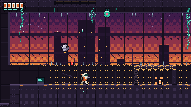
Region 01
Overgrown Landing Complex
Amber light through broken observation windows, violet shadow in the corridors, and turquoise growth curling around dormant machinery.
A lone surveyor. An abandoned research station beneath an alien wilderness. A sun that never quite sets.
AD move Space jump J fire K dash W use M map Esc pauseOn-screen touch controls appear once you start. Best in landscape.
Your lander settles on the ridge as the light turns amber. Below it, a research station sits half-swallowed by the planet, its uplink beacon dark and its reactor cold.
Something luminous has grown through the machinery while the crew was gone. Sentinels still walk their rounds. Specimen tanks have cracked. The terminals remember a little of what happened.
Work your way down through the landing complex, the flooded laboratories and the buried reactor. Recover the tools the crew left behind, wake the core, and bring the beacon back online.
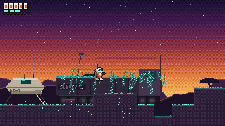
Fifteen hand-built rooms, each with its own palette, parallax and weather of drifting spores, so you always know where you are, even in the dark.

Amber light through broken observation windows, violet shadow in the corridors, and turquoise growth curling around dormant machinery.
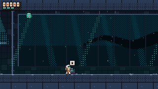
Cold tile, standing water and cracked specimen tanks. Something enormous still moves behind the glass in the gallery. Don't tap it.
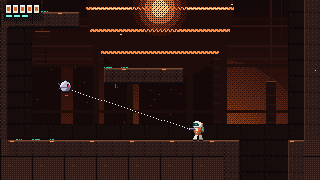
Rust, heat and a core the size of a hill, waking slowly as you descend. The deeper you go, the brighter it pulses.
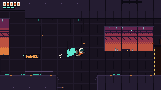
You can see the reactor lift from the first hub. You just can't reach it yet. The air dash and the magnetic boots change how every room you've already crossed works.
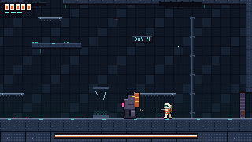
A quick bolt with a steady rhythm, and a charged shot you build by holding fire. Enemies wind up before they strike and recover after, so a fight is about reading, not reacting.
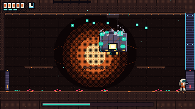
A ceiling-rail crane overrun by luminous growth guards the core. Three clearly telegraphed attacks, a second phase that chains them faster, and a gap after every pattern when its core opens.
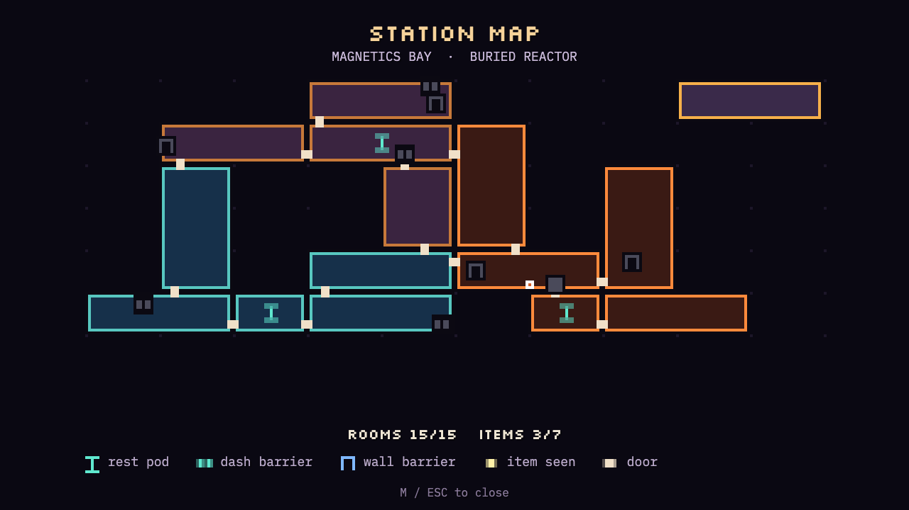
Four suit cells and a pulse amplifier sit off the main path. The clues are consistent: cracked panels, exposed wiring, spores drifting out of a wall, a chamber you can see but not reach.
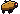
Patrols its stretch of floor, then lunges. When it stalls and sparks, it's open.
Keeps its distance and paints a line before it fires. Crouch, move, or shoot the bolt down.
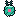
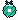
Hangs where you walk. Before it drops, it swells and a warning appears on the ground below.
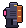
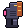
Shots bounce off the front. It turns slowly, so jump over or dash through and aim for the glow on its back.
These are straight captures at the game's native 320 × 180, scaled up without smoothing.
The whole game is a single HTML page you can open from disk. Everything you see and hear is generated by its own code when it starts.
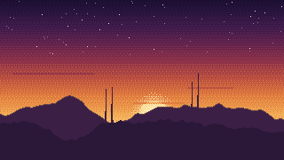
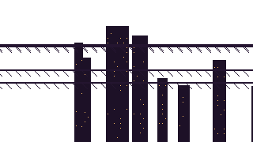
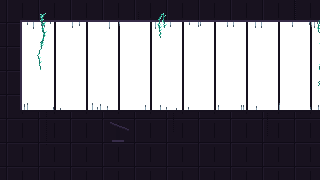
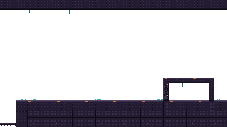
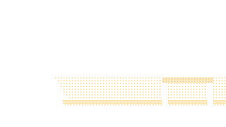
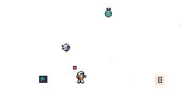
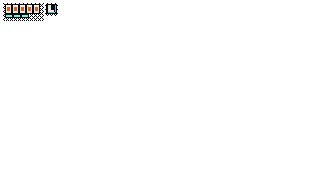
The world renders at 320 × 180 and scales up by whole pixels with no smoothing. Text lives on a separate high-resolution overlay, so it stays sharp at any size.
Skies, shadows, light and fades are ordered 4 × 4 Bayer patterns. Even see-through effects like membranes and water are dither, not alpha.
Rooms are written as tile rectangles plus objects and scenery. Their parallax layers, walls, tiles and props are painted procedurally on entry and cached.
A fixed 60 Hz step, 0.1 s of coyote time, a 0.135 s jump buffer and 4 px collision sub-steps, so nothing tunnels through an 8 px tile. The camera snaps to whole pixels and moves in step with you.
Footsteps, bolts, the charge hum, enemy tells and the drone of each region are oscillators and filtered noise in Web Audio. Sound is off until you turn it on.
Keyboard or touch with multi-finger support, a reduced-motion mode, auto-pause when focus is lost, and local saves that fall back gracefully when storage is blocked.
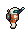
A scripted player beats the whole game from a fresh save using only key presses: every jump, dash, wall-climb, shortcut and the final fight. Randomised stress runs, save and reload checks, touch tests and "can you climb back out?" checks run in a headless browser too, which is how several unfair jumps were found and fixed.
Hints appear the first time you need them and disappear once you've done the thing. Movement and firing work together.
| Move | AD or ←→ |
|---|---|
| Jump | Space or Z · hold for height |
| Fire | J or X · hold, then release to charge |
| Dash | K or C · once found |
| Crouch | S or ↓ |
| Use / aim up | W or ↑ |
| Drop through a grate | S + Space |
| Map · Pause | M · Esc |
| Move, crouch, use | D-pad (left thumb) |
|---|---|
| Jump | JUMP |
| Fire | FIRE · hold to charge |
| Dash | DASH · appears once found |
| Map · Pause | Buttons, top right |
Best in landscape. On a phone, open the game full screen.
Twenty minutes, one station, no install. Your progress saves in the browser, so you can stop at any rest pod.
Play Dusk Station View the source